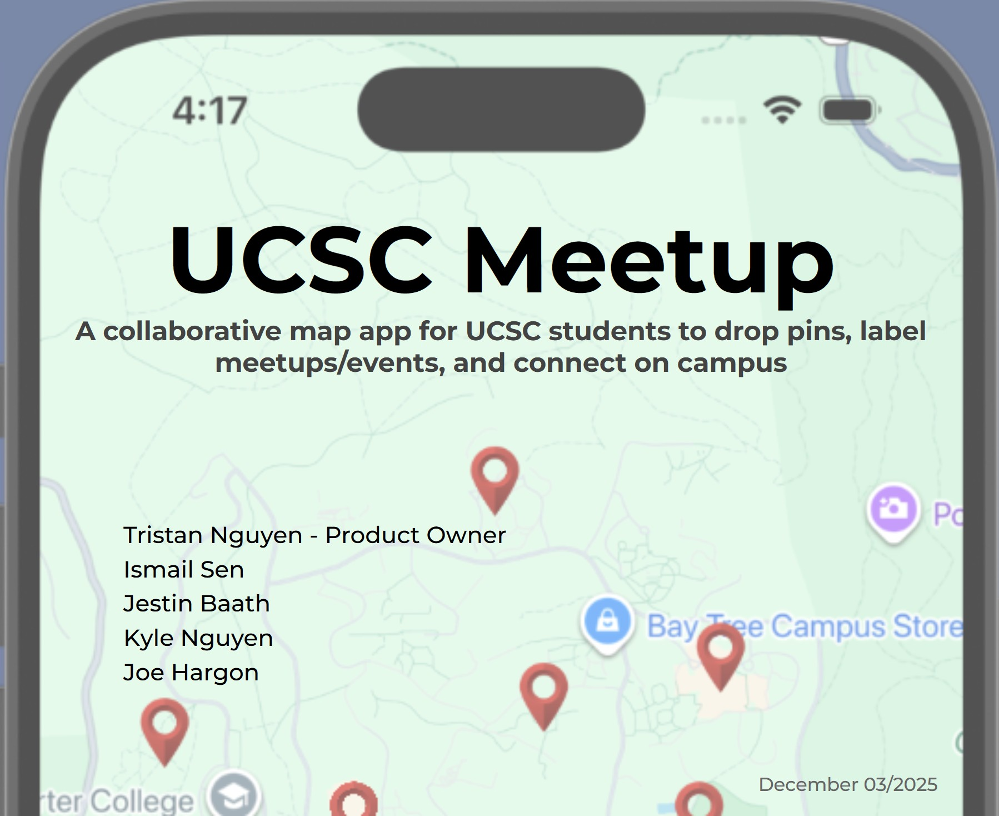
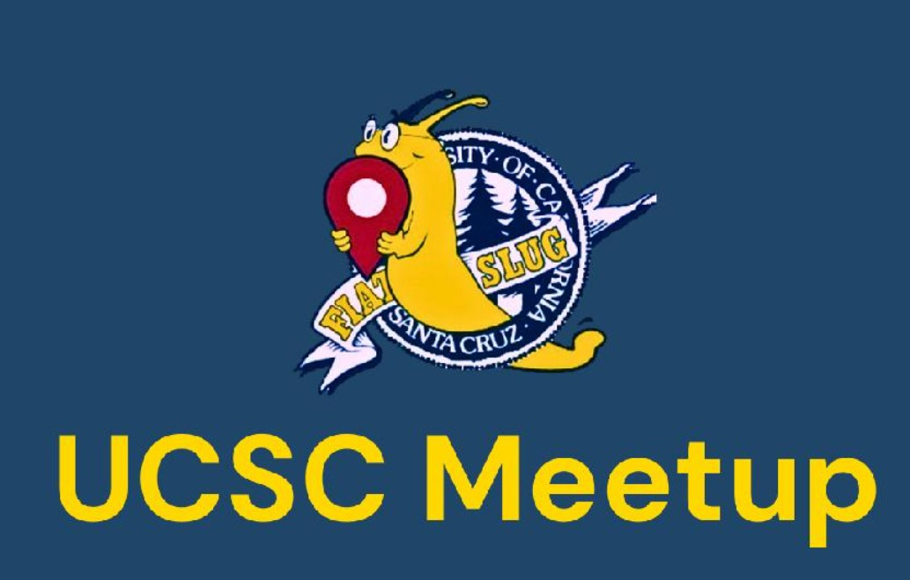
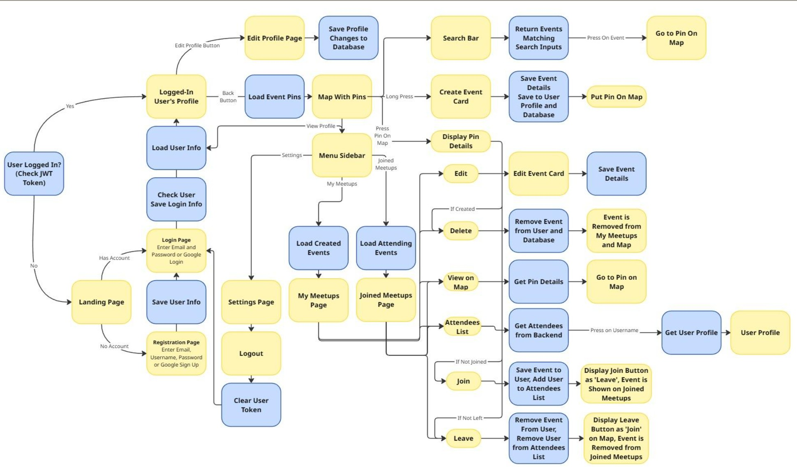
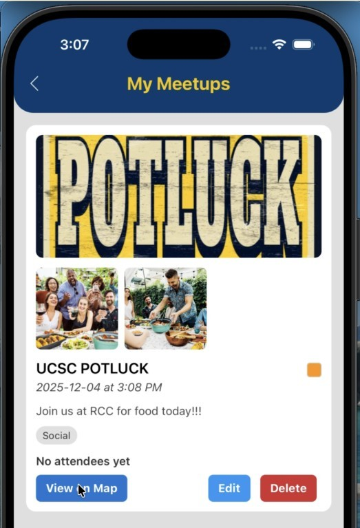
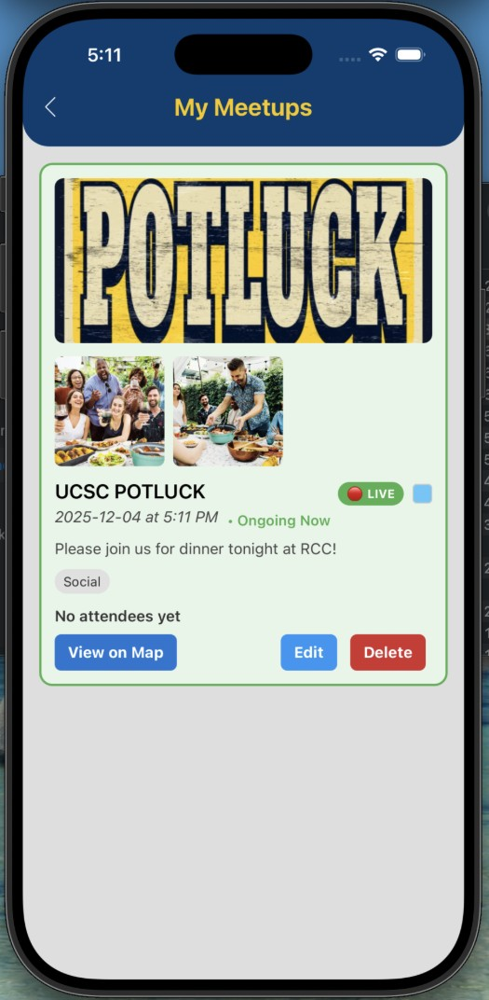
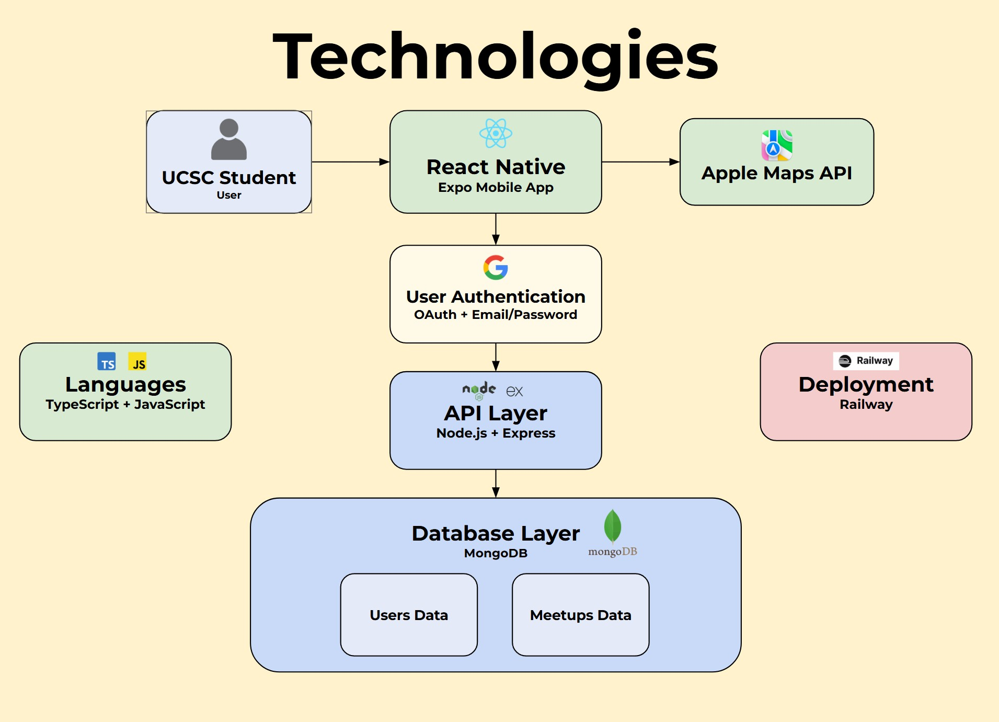

UCSC Meetup
A collaborative mobile application that enables UCSC students to discover, create, and join campus meetups through an interactive map.

01
Overview
Student events, study groups, and informal meetups happen throughout the UCSC campus, but they are often difficult to discover because information is scattered across different communication channels. UCSC Meetup provides a centralized mobile experience for creating and locating events on a shared map.
02
Application Demo
A short walkthrough demonstrating the core user experience, including discovering meetups, creating events, joining activities, and navigating the interactive campus map.
Branding
Project identity
The application uses UCSC colors and campus imagery to make the product immediately recognizable to its intended student audience.

02
Murat's contribution
Murat contributed across the React Native frontend and supporting backend integration, with most of his work centered on user-facing application flows.
- Developed the UCSC map screen and map-navigation constraints.
- Established shared event state using React Context.
- Expanded event-creation and event-management workflows.
- Built profile and profile-editing functionality.
- Integrated persistent authentication and user sessions.
- Implemented join, leave, and delete interactions from the map experience.
- Added support for event header and gallery images.
- Contributed to MongoDB schema changes, API integration, debugging, and merges.
03
The problem
Existing campus communication channels make spontaneous gatherings and smaller student-led events easy to miss. The team wanted to make those activities visible through a simple map-first interface where authenticated users could create meetups, inspect event details, join events, and manage their own participation.
04
System architecture

The mobile frontend communicates with a Node.js and Express API. MongoDB stores user and meetup data, OAuth supports authentication, Apple Maps provides the location interface, and Railway hosts the backend.
05
Feature examples
Selected views from the completed mobile application.


06
Technology stack

07
Challenges and lessons
Challenge
Learning unfamiliar technologies
The team had to learn new frameworks, languages, deployment tools, and Scrum practices while building the application from the ground up.
Challenge
Coordination and technical debt
Inconsistent schedules and unclear task ownership created merge conflicts, uneven workloads, and code that became harder to navigate.
Lesson
Modularity and communication matter
The team concluded that more consistent attendance, earlier communication, and better code modularization would have reduced debugging and integration costs.
Source repository